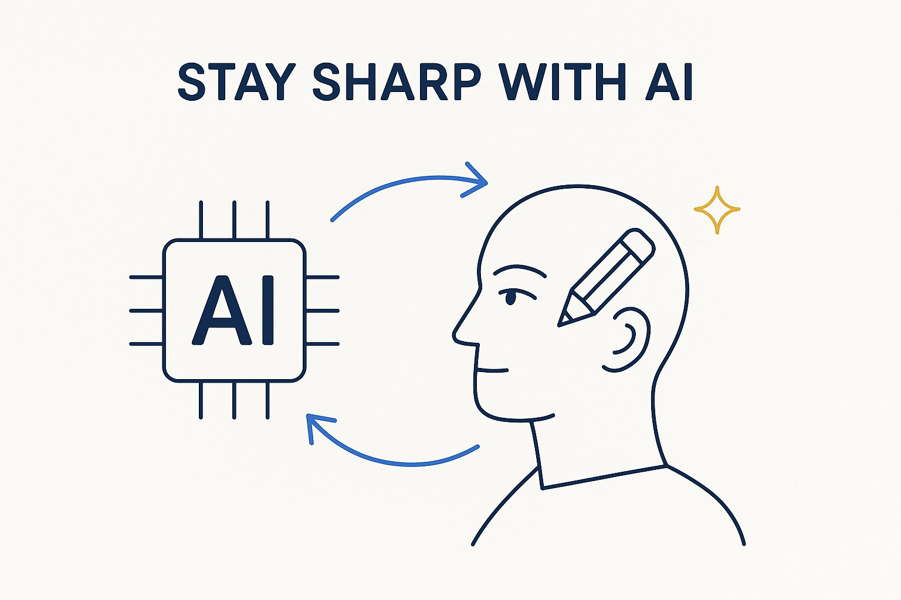

The common fear is that AI makes us dumber. The answer isn't to avoid AI — it's to stay the curator and decision-maker, keep thinking, and keep learning, so AI amplifies your judgment instead of replacing it.

> The common fear is that AI makes us dumber. The answer isn't to avoid AI — it's to stay the curator and decision-maker, keep thinking, and keep learning, so AI amplifies your judgment instead of replacing it.
There is a real and often-heard fear: that leaning on AI makes us dumber — that if the machine does the thinking, the skill atrophies. It is a fair worry, and pretending otherwise would be dishonest. A person who lets AI decide everything, unchecked, does get duller, the same way a muscle you never use gets weaker. The failure is real; the conclusion — avoid AI — is wrong.
The answer is to stay the curator and the decision-maker. AI generates, proposes, drafts; you judge, correct and own the result. You keep asking why, you keep checking against the facts, you keep understanding *how* the answer was reached rather than just accepting it. Used that way, AI is an amplifier of judgment, not a substitute for it — it clears the grunt work so you can spend your attention on the hard, human parts: meaning, trade-offs, what actually matters.
But staying sharp can’t be left to good intentions either — it needs a method, a structure, an agreement and the discipline to keep it up. To stay the boss of AI, we need a deliberate way of keeping up: what we must understand ourselves versus what we delegate, the spaced review that keeps the fundamentals fresh, the continuous learning that is now non-negotiable, and the shared commitment to actually do it. Without that structure the fear comes true; with it, we stay in control.
And there is a neat symmetry in where the time comes from. We don’t need to find extra hours for learning — we reclaim them. The time now lost to inefficient meetings is exactly the time to invest in staying sharp. Cut the status theatre, structure the work so meetings are shorter and prepared, and put the recovered hours into the spaced review and practice that keep us ahead of the AI rather than behind it. Efficiency and learning are the same move: stop wasting the time, and spend it on getting sharper.
This is exactly why continuous learning is non-negotiable now. The way to not get dumb from AI is to keep deliberately sharpening the thinking AI can’t do for you — through practice, feedback and spaced review. It is the human counterpart to vibe-driven AI: don’t let the AI run unspecified and ungated, and don’t let your own mind do the same. Stay sharp, and AI makes you stronger, not softer.
Where it lives: the AI & innovation layer of Breakthrough Modeling — AI as amplifier, with a human who stays sharp.